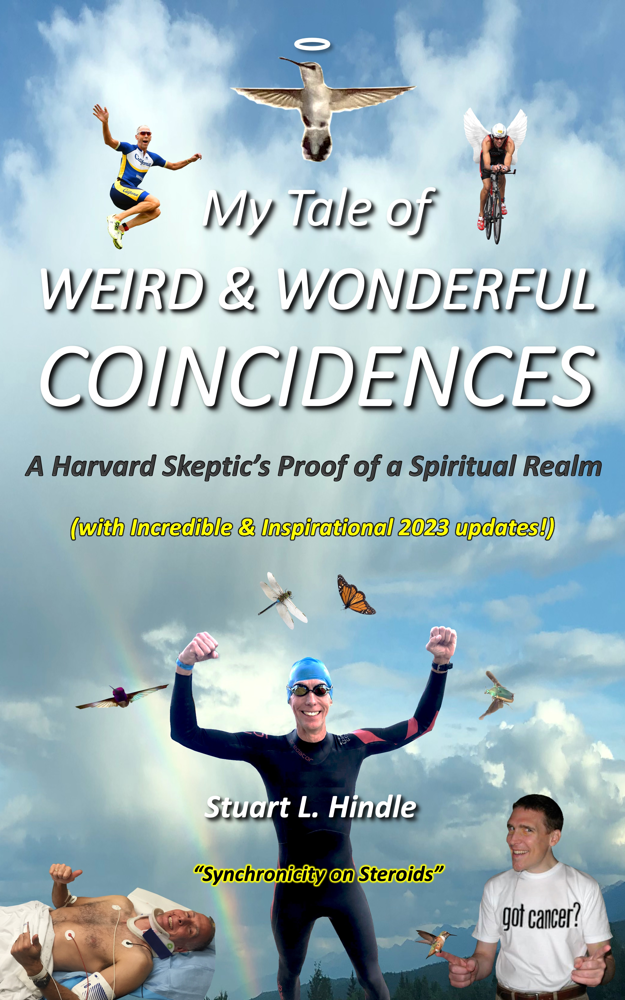

It’s a Magical World, not Magical Thinking…
Warning: Potential Life Changer!
HumZillion: Astonishing Further Proof of a Spiritual Realm
Have you ever come across a strange coincidence that you couldn’t fully explain (nor perhaps the science community at large), leaving you wondering if there was more to this world than you thought? Maybe a small part of you even wished this was the case, hoping that there was greater meaning to our existence, filling some void you sensed in life, and potentially even providing some much-needed direction in a sea of uncertainty and chaos. Perhaps you are struggling to overcome adversity, such as a personal hardship, or the grief associated with losing a loved one or facing your own mortality. Alternatively, maybe you are simply inquisitive, wondering how our world works, whether God exists, and what happens to us after we pass away.
HumZillion is the intersection of science and spirituality—modern day, incredible tangible proof that some coincidences don’t happen by chance, and that seemingly behind it all is an omniscient, caring entity (that many consider to be "God", or a cosmic energy source), with deceased loved ones also playing a role, all existing in a spiritual realm (that many consider to be “heaven,” or an energy state consisting of multiple planes). HumZillion showcases the miraculous power of coincidences and what is possible when you lean on this omniscient, caring entity in your daily life for guidance and help overcoming adversity.
Spiralling Low-Probability Events Seemingly Triggered by Saving a Girl from Harm
As daunting a mission as that may seem, HumZillion’s proof is based primarily on extensively documented, extremely low probability, highly meaningful coincidences happening to me, a multi-decade near-atheist, data-centric, Harvard MBA and prior engineer (and others). These events sharply accelerated after I swerved into a lamppost on my bike to save a girl from harm while I was triathlon training for an upcoming duathlon world championship in 2019 (to race in honor of a childhood friend who passed away from cancer). It was my second traumatic bike accident in four years—the first a hit and run in which I broke my back, and this one so bad that my doctors didn’t initially realize I had fractured another vertebra! I shattered my shoulder blade, broke my ribs in 9 places, punctured my lung, and fractured my sternum. Whether the catalyst was the act of saving the girl, the broken state I was in afterwards, and/or some other factor, the phenomena started with hummingbirds, and other flying creatures (dragonflies, butterflies, hawks, etc.), closely approaching me unafraid, often where never seen before (for the first time in my over 50 years on this planet) at very noteworthy times, and then approaching others with whom I connected.
Events escalated from there, and before the end of the year, I was transformed from being a multi-decade skeptic to becoming wholeheartedly convinced not only that some coincidences do not happen by chance, but also that a spiritual realm exists—and all this occurred before even more astonishing things went down, including my repeatedly now receiving premonitions that come true within minutes to days! [Yes, I realize how crazy this all sounds, but it is well documented in a 700-page book I published in 2021 with updates through early 2024, “My Tale of Weird & Wonderful Coincidences: A Harvard Skeptic’s Proof of a Spiritual Realm,” available through Amazon, and subsequent HumZillion YouTube videos and other content I have created (refer to the Additional Content web page)].
As a prior data-centric, near-atheist skeptic, it wasn’t in my nature to attribute divine/supernatural explanations to events just because they were highly bizarre—after all, I agree with probability experts: some extremely low probability events do happen by chance, and we should expect this mathematically. For over five decades, I had never been closely approached by a hummingbird, hovering for an extended period right in my face, unafraid. It is such a rare event, without food or familiarity being a factor, that it won’t happen to most people in their lifetime—where we live in Los Angeles, hummingbirds will typically fly away from feeders we now have if they see us moving, even if over 10 feet away through a window. However, in 2018, a hummingbird hovering unafraid in front of me on our Marina del Rey patio, the first time ever in over 2 decades of living in LA, reminded me of a prior rare occurrence at our Palm Desert vacation property, and within 10 minutes, a hummingbird triggered a security camera there in Palm Desert for the first time ever, over 100 miles away, as if responding to my thinking about one there! That bizarre incident didn’t change my view on spirituality—like a lot of other people, I just wrote it off as something I couldn’t explain, sent a text message and security camera screenshot to a few friends and family members (purposely trying to get a rise out of my religious sisters because I knew they would say it was some kind of divine sign), and continued on with my busy life.
My perspective started to radically change, though, after hitting the lamppost to save the girl from harm in 2019. After I had my shoulder reconstructed with 7 titanium plates, while in severe pain from all my broken bones at my peak need of healing, a hummingbird descended upon me in my sling on our roof deck, hovering for an extended period unafraid just inches from my face, where never seen before, AS I was wiping away a tear of sadness for the impact of my accident on my family! It was the morning after referring to the bizarre 2018 series of hummingbird events as a reason why I was at least agnostic versus full atheist (because several things like that had happened to me thus far in my life that I couldn’t easily explain, leaving me wondering if there was something more going on in this world than we realized—perhaps you’ve had experiences like that as well…). As it hovered before me, I felt a wave of warm energy flow through my body, temporarily relieving me of most of my pain (perhaps, though, it was the shock of being confronted by the hummingbird). That evening, a hummingbird TV screensaver image (along with dozens of other wildlife photos randomly appearing in a slideshow in a collage, and occasionally by themselves) repeatedly appeared full-size when I was either referring to the real encounter that morning, or the subsequent virtual encounters on the TV. The events that day triggered a “mathematical awakening” in me, when to my astonishment I realized that science couldn’t fully explain these extremely low-probability series of occurrences, now linking back to the 2018 hummingbird events I had previously dismissed.
After having a miraculous recovery, amazingly still racing in the world championship for Team USA in Spain in under 4 months, another hummingbird descended upon me, unafraid, in Palm Desert the very next weekend, occurring beside a 35-ft cross on a desolate mountaintop, also where never seen before. I discovered months later that you could see the hummingbird’s reflection in my sunglasses, appearing like an angel, as I was doing a selfie photo after a video recap of the recovery/race. It was these two events in particular (i.e. a hummingbird appearing at my peak need of healing, literally as I was wiping away a tear of sadness for the impact on my family, and another appearing literally right after I had completed a selfie-video recapping my miraculous recovery) that convinced me not only that science could not fully explain the extremely low-probability encounters, but also that there was an omniscient, caring element to whatever was behind them occurring.
Little did I know at that time that additional flying creature encounters would occur on the anniversary weekends of this initial desert cross encounter, including on the first anniversary, when a hummingbird reenacted two of the prior 2018 events WHILE I was reviewing a recap of them on my laptop (as farfetched as this sounds, it was captured by a security camera)!
Kinds of Events Start to Expand and Happen to Others as Well
After the hummingbirds approached me before and after my miraculous healing in 2019, hummingbirds also began closely approaching others with whom I subsequently connected, for the first time ever in their lives, including strangers, several on the same day I warned them it might happen.
I also started experiencing “combo cameos,” such as a dragonfly circling around me, where never seen before, AS I was wondering if a prior hummingbird that had just hovered in my face was possibly a chance event (as if the omniscient entity was reading my mind and wished to make it clear that NONE of this was happening by chance)! Digital/virtual encounters took things to a whole new level, ranging from the hummingbird image appearing full-size repeatedly on cue on the TV screensaver previously mentioned, music shockingly playing at highly meaningful times, and even a hawk image bizarrely turning into a yellow cardinal image in my video editing program (which triggered other events in the physical world and is the subject of my first narrated video soon to be posted on the HumZillion YouTube channel). It is hard to dismiss the events in the physical world as simply being interactions with nature that we don’t fully understand when digital/virtual events are occurring in parallel and seemingly connected somehow…
…And Then the Premonitions Started (How Does One Explain That?!)
If that wasn’t crazy enough, as mentioned previously, I started having documented premonitions, conveyed to me seemingly by this same omniscient, caring entity—e.g. leading me on a detour while bike training to a priest, and warning me in advance of a freeway accident my son was about to have. Incredibly, I was subsequently in 2023 told in advance that a hummingbird was going to approach me AGAIN by the desert mountaintop cross, on the 4th anniversary weekend of the hummingbird approaching me there in 2019, both times immediately after overcoming my own adversity to race in a Spain world championship in honor of a loved one impacted by cancer…and IT HAPPENED! My estimated probability of just these two hummingbird cross encounters, with the second one predicted in advance to happen on the 4th anniversary of the first, is less than one in a quadrillion, or over a million times less likely than winning the U.S. Powerball lottery, which occasionally has a jackpot of over a billion dollars (chance of winning is one in 292 million).
Inspirational Further Proof of an Afterlife
Seemingly not by chance as well, I started to increasingly meet people who, regardless of their prior view on spirituality, were completely convinced that one or more close encounters they had with a flying creature (such as a hummingbird or butterfly) at a very meaningful time/place was a deceased loved one reaching out to let them know they were okay (some even with repeat encounters on the anniversary of a loved one’s passing—this subsequently ended up happening to me!). I had previously been quite skeptical of many of these reported encounters tied to a loved one passing, given that it is in our human nature, especially when grieving the loss of a loved one, to grasp at any potential sign that might give a bit of hope that a loved one’s existence continues after passing (e.g. a butterfly that you may have not noticed or given a second thought to previously, now is on your radar screen).
After I published my book about all of this at the end of 2021, my mom was diagnosed with terminal cancer. Subsequent updates to my book, and videos posted on my new HumZillion YouTube Channel, capture the astonishing, inspirational additional events that occurred before and after her passing, not the least of which were several prearranged hummingbird encounters within the first two days of her passing, including where never seen before, and within hours of the anniversary of her passing, a repeat hummingbird replicating the divebombing action of the first of these encounters. Such wonderful documentation exists because I was told by the omniscient, caring voice (in response to my prayer prior to flying back home) to video record a conversation with my mom on ways in which she could reach out to us after her passing to let us know she was okay—I didn’t realize it would be the last time I saw her alive.
I hope these experiences can provide further comfort to us all of the wondrous continued existence of our loved ones after their passing (and our passing as well!), and create increased awareness of this omniscient, caring presence seemingly behind all of this whom we can lean on for support in our daily lives.
Mind-Blowing Improbabilities Become Genesis for "One in a HumZillion" Nomenclature
All of these events were sufficient to overwhelmingly convince me, a data-centric, Harvard-trained skeptic, that not everything happens by chance (and of the likely roles played by this omniscient, caring entity and our deceased loved ones reaching out to us). In some respects, my awakening was a mathematical one based on probabilities. The estimated probability of everything documented in my 700-page book occurring by chance is less than one in a googol (10100, that is “1” with 100 zeros after it)!
What is a bigger leap of faith…
- to assume that these incredible things are all happening by chance (clinging to common probability expert explanations such as the “law of large numbers” without truly digging into the likelihoods), OR
- to assume that there is something going on that is far more special that we don’t (and may never) fully understand, but clearly exists?
It got to the point that the possibility of all of these events being simply by chance was so ludicrously unlikely that I, only partially in jest, came up with my own terminology to describe such astronomical odds: “One in a HumZillion!” It’s a playful, but powerful challenge to academia: prove me (and others) wrong. I encourage use of this term when encountering your own incredible coincidences…
Validation from the World of Quantum Physics and Other Scientific Fields
Moreover, my (and others’) documented premonitions are proof that somebody is clearly seeing into the future—is it us, God, or perhaps some combination of the two? Even Einstein deemed the bizarre behavior of light photons, seemingly retroactively changing their behavior when being monitored by quantum physicists during double-slit experiments, to be “spooky.” The Nobel prize for physics in 2022 was awarded to quantum physicists who demonstrated the influence that entangled subatomic particles have on each other across vast distances. Though breakthroughs in science will likely continue to explain more and more phenomena once attributed to God and the paranormal, I think the greatest breakthroughs are yet to come once academia is truly ready to embrace the possibility of the existence of a spiritual realm. Moreover, I think we have a lot more to learn about our own likely collective consciousness, with or without factoring in God’s existence.
What I, alone, have been experiencing since saving the girl is like “Synchronicity on Steroids!”
Through all of these experiences, I have come to the same conclusion of many spiritual gurus, psychotherapists, and other medical experts (including Jung, Chopra, Redfield, and Peck) that these coincidences are like GPS navigation beacons to help guide us through life, especially in times of uncertainty and adversity. It starts with being open to the possibility and being present in the moment in daily life. Hitting the lamppost was the best (negative) thing that has ever happened to me. It has opened my eyes and mind to aspects of our world that I never fully believed existed, enabling me to experience miraculous things that I hope can be inspiration for others--may it spark your own incredible journeys and help you to overcome adversity. Being aware of, and learning to lean on, this omniscient, caring presence is just the starting point…